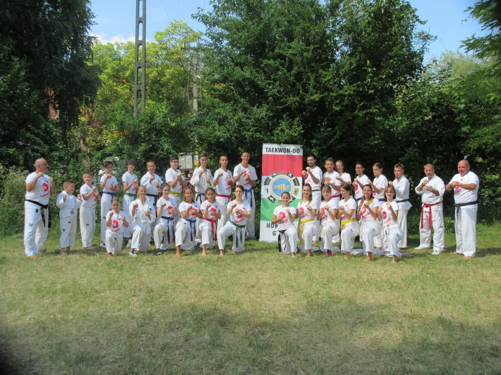

A Taekwon-doról..A Taekwon-do egy Koreai harcművészet, melyet Choi Hong Hi hozta létre 1955-ben. A Magyar Taekwon-dot Harmat László nagymester alapította 1977-ben. Maga a Taekwon-do jelentése "a lábbal és kézzel küzdés művészete". |
|
|  | Én és a Taekwon-doA Taekwon-dot 2013 tavaszán kezdtem el, és azután nem gondoltam volna, de az életem szerves részévé vált. Egészen 2019 nyaráig csináltam. 2019-ben Pestre költöztem, és ezután is folytatni terveztem, de egyetem mellett elég nehéz rá időt szánni, és ismét belemélyedni a sportágba. Az edzések sokat változtattak az életemen. Egy szuper közösség tagjává váltam, és a barátaim nagy részét is onnan ismertem meg, akikkel számos közös élmény köt össze. Az edzéseken fegyelmet tanultam, és sokat fejlődtem, de nem csak fizikailag, hanem lélekben is egyaránt. |